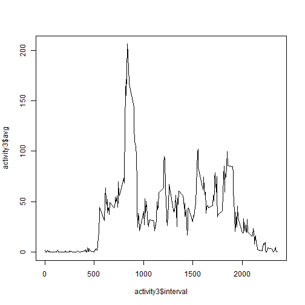
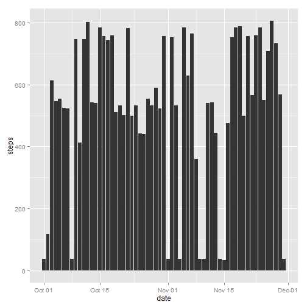
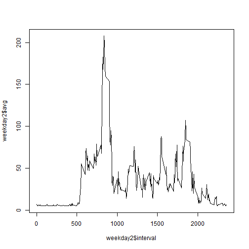
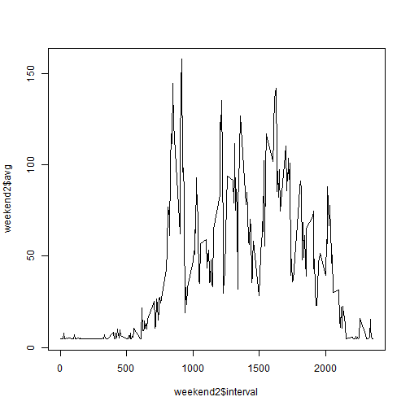

library(knitr)
opts_chunk$set(fig.path = "figures/")
Read in the CSV file and classify columns.
activity <- read.csv("activity.csv", colClasses = c("numeric","Date","numeric"))
library(ggplot2)
p <- ggplot(activity, aes(x=date, y=steps)) + geom_histogram(stat='identity', position='dodge')
datebreaks <- seq(as.Date("2012-10-01"), as.Date("2012-11-30"), by="1 week")
p
library(doBy)
summaryBy(steps ~ date, data = activity,
FUN = list(mean, max, min, median, sd))
## date steps.mean steps.max steps.min steps.median steps.sd
## 1 2012-10-01 NA NA NA NA NA
## 2 2012-10-02 0.4375 117 0 0 6.913
## 3 2012-10-03 39.4167 613 0 0 111.898
## 4 2012-10-04 42.0694 547 0 0 108.602
## 5 2012-10-05 46.1597 555 0 0 120.916
## 6 2012-10-06 53.5417 526 0 0 121.205
## 7 2012-10-07 38.2465 523 0 0 88.333
## 8 2012-10-08 NA NA NA NA NA
## 9 2012-10-09 44.4826 748 0 0 130.017
## 10 2012-10-10 34.3750 413 0 0 77.078
## 11 2012-10-11 35.7778 748 0 0 127.648
## 12 2012-10-12 60.3542 802 0 0 155.086
## 13 2012-10-13 43.1458 542 0 0 112.938
## 14 2012-10-14 52.4236 540 0 0 130.084
## 15 2012-10-15 35.2049 786 0 0 119.485
## 16 2012-10-16 52.3750 758 0 0 140.802
## 17 2012-10-17 46.7083 744 0 0 132.228
## 18 2012-10-18 34.9167 759 0 0 121.820
## 19 2012-10-19 41.0729 512 0 0 98.061
## 20 2012-10-20 36.0938 532 0 0 109.048
## 21 2012-10-21 30.6285 501 0 0 83.149
## 22 2012-10-22 46.7361 783 0 0 134.043
## 23 2012-10-23 30.9653 499 0 0 80.904
## 24 2012-10-24 29.0104 533 0 0 81.791
## 25 2012-10-25 8.6528 443 0 0 38.729
## 26 2012-10-26 23.5347 440 0 0 62.309
## 27 2012-10-27 35.1354 555 0 0 98.655
## 28 2012-10-28 39.7847 533 0 0 93.179
## 29 2012-10-29 17.4236 591 0 0 58.846
## 30 2012-10-30 34.0938 523 0 0 96.737
## 31 2012-10-31 53.5208 757 0 0 141.101
## 32 2012-11-01 NA NA NA NA NA
## 33 2012-11-02 36.8056 753 0 0 121.521
## 34 2012-11-03 36.7049 533 0 0 95.611
## 35 2012-11-04 NA NA NA NA NA
## 36 2012-11-05 36.2465 785 0 0 119.559
## 37 2012-11-06 28.9375 630 0 0 80.024
## 38 2012-11-07 44.7326 766 0 0 124.437
## 39 2012-11-08 11.1771 359 0 0 38.160
## 40 2012-11-09 NA NA NA NA NA
## 41 2012-11-10 NA NA NA NA NA
## 42 2012-11-11 43.7778 540 0 0 113.627
## 43 2012-11-12 37.3785 542 0 0 117.245
## 44 2012-11-13 25.4722 444 0 0 64.409
## 45 2012-11-14 NA NA NA NA NA
## 46 2012-11-15 0.1424 33 0 0 1.999
## 47 2012-11-16 18.8924 475 0 0 62.519
## 48 2012-11-17 49.7882 753 0 0 145.656
## 49 2012-11-18 52.4653 785 0 0 141.655
## 50 2012-11-19 30.6979 789 0 0 120.217
## 51 2012-11-20 15.5278 500 0 0 54.660
## 52 2012-11-21 44.3993 758 0 0 141.774
## 53 2012-11-22 70.9271 567 0 0 153.560
## 54 2012-11-23 73.5903 760 0 0 175.275
## 55 2012-11-24 50.2708 785 0 0 147.882
## 56 2012-11-25 41.0903 551 0 0 98.307
## 57 2012-11-26 38.7569 709 0 0 118.005
## 58 2012-11-27 47.3819 806 0 0 143.289
## 59 2012-11-28 35.3576 733 0 0 129.013
## 60 2012-11-29 24.4688 568 0 0 81.470
## 61 2012-11-30 NA NA NA NA NA
library(plyr)
activity2 <- na.omit(activity)
activity3 <- ddply(activity2, c("interval"), na.rm = FALSE, summarise, avg = mean(steps))
plot(activity3$interval, activity3$avg, type="l")

A. Maximun number of steps is:
max(activity3$avg)
## [1] 206.2
B. The 5-minute interval with the maximun number of steps is:
activity3 <- activity3[order(-activity3$avg),]
activity3[1, ]
## interval na.rm avg
## 104 835 FALSE 206.2
length(activity[is.na(activity)])
## [1] 2304
This code chunk will replace NA's with the mean.
library(plyr)
impute.med <- function(steps) replace(steps, is.na(steps), mean(steps, na.rm = TRUE))
dat2 <- sapply(activity, function(steps){
if(is.numeric(steps)){
impute.med(steps)
} else {
steps
}
}
)
This code chunk will create a data frame with replaced NA's and binds the date.
library(data.table)
activity2 <- data.frame(dat2)
activity2a <- activity2[c(1, 3)]
activitya <- activity[c(2)]
activity3 <- cbind(activity2a, activitya)
p <- ggplot(activity3, aes(x=date, y=steps)) + geom_histogram(stat='identity', position='dodge')
p

library(doBy)
summaryBy(steps ~ date, data = activity3,
FUN = list(mean, median))
## date steps.mean steps.median
## 1 2012-10-01 37.3826 37.38
## 2 2012-10-02 0.4375 0.00
## 3 2012-10-03 39.4167 0.00
## 4 2012-10-04 42.0694 0.00
## 5 2012-10-05 46.1597 0.00
## 6 2012-10-06 53.5417 0.00
## 7 2012-10-07 38.2465 0.00
## 8 2012-10-08 37.3826 37.38
## 9 2012-10-09 44.4826 0.00
## 10 2012-10-10 34.3750 0.00
## 11 2012-10-11 35.7778 0.00
## 12 2012-10-12 60.3542 0.00
## 13 2012-10-13 43.1458 0.00
## 14 2012-10-14 52.4236 0.00
## 15 2012-10-15 35.2049 0.00
## 16 2012-10-16 52.3750 0.00
## 17 2012-10-17 46.7083 0.00
## 18 2012-10-18 34.9167 0.00
## 19 2012-10-19 41.0729 0.00
## 20 2012-10-20 36.0938 0.00
## 21 2012-10-21 30.6285 0.00
## 22 2012-10-22 46.7361 0.00
## 23 2012-10-23 30.9653 0.00
## 24 2012-10-24 29.0104 0.00
## 25 2012-10-25 8.6528 0.00
## 26 2012-10-26 23.5347 0.00
## 27 2012-10-27 35.1354 0.00
## 28 2012-10-28 39.7847 0.00
## 29 2012-10-29 17.4236 0.00
## 30 2012-10-30 34.0938 0.00
## 31 2012-10-31 53.5208 0.00
## 32 2012-11-01 37.3826 37.38
## 33 2012-11-02 36.8056 0.00
## 34 2012-11-03 36.7049 0.00
## 35 2012-11-04 37.3826 37.38
## 36 2012-11-05 36.2465 0.00
## 37 2012-11-06 28.9375 0.00
## 38 2012-11-07 44.7326 0.00
## 39 2012-11-08 11.1771 0.00
## 40 2012-11-09 37.3826 37.38
## 41 2012-11-10 37.3826 37.38
## 42 2012-11-11 43.7778 0.00
## 43 2012-11-12 37.3785 0.00
## 44 2012-11-13 25.4722 0.00
## 45 2012-11-14 37.3826 37.38
## 46 2012-11-15 0.1424 0.00
## 47 2012-11-16 18.8924 0.00
## 48 2012-11-17 49.7882 0.00
## 49 2012-11-18 52.4653 0.00
## 50 2012-11-19 30.6979 0.00
## 51 2012-11-20 15.5278 0.00
## 52 2012-11-21 44.3993 0.00
## 53 2012-11-22 70.9271 0.00
## 54 2012-11-23 73.5903 0.00
## 55 2012-11-24 50.2708 0.00
## 56 2012-11-25 41.0903 0.00
## 57 2012-11-26 38.7569 0.00
## 58 2012-11-27 47.3819 0.00
## 59 2012-11-28 35.3576 0.00
## 60 2012-11-29 24.4688 0.00
## 61 2012-11-30 37.3826 37.38
activity3$day <- weekdays(activity3$date)
activity3 = within(activity3,
{
Week = as.factor(
ifelse(
(activity3$day)
%in% c("Saturday","Sunday")
, "weekend", "weekday"
)
)
}
)
Subset the data into two data frames. One for weekends and one for weekdays.
weekend <- subset(activity3, day=="Saturday" | day=="Sunday")
weekday <- subset(activity3, day=="Monday" | day=="Tuesday" | day=="Wednesday" | day=="Thursday" | day == "Friday")
Plot the weekend and weekday data frames for comparison.
library(plyr)
weekday2 <- ddply(weekday, c("interval"), na.rm = FALSE, summarise, avg = mean(steps))
plot(weekday2$interval, weekday2$avg, type="l")

weekend2 <- ddply(weekend, c("interval"), na.rm = FALSE, summarise, avg = mean(steps))
plot(weekend2$interval, weekend2$avg, type="l")
